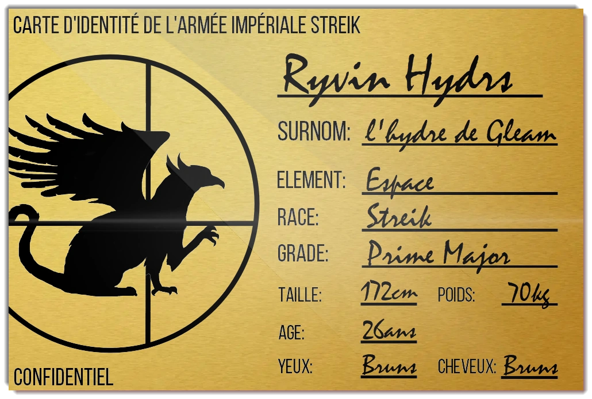

Ryvin Hydrs

-
Nom: Ryvin Hydrs
Surnom: L'hydre de Gleam
Grade: Prime Major
Race: Streik
Particules: Espace
Arme: Double épées
Âge: 26ans
Taille: 172cm
Poids: 70kg
Cheveux: Bruns
Yeux: Bruns
Présentation
Ryvin Hydrs est le chef de l'armée Streik et le Prime Major des armées impériales. Il dirige la 1er Squada, la plus puissante des escouades d'élite. Malgré ses origines modestes dans les bas-quartiers de Gleam, il est respecté par ses hommes grâce à sa maîtrise de l'espace. [source]
Apparences
Ryvin est un homme plutôt petit aux cheveux et aux yeux bruns. Le soldat, à l’apparence soignée et noble, est élégant, malgré ses origines modestes. [source]
Histoire
Ryvin Hydrs n'est pas un noble Streik et ne possède pas les yeux du diable. Il a dû survivre enfant de le pire quartier de Gleam, la capitale du sud. Il ne souhaite que suivre les vœux de sa sœur qui s'est sacrifiée pour sa survie. [source]
Apparition
Ryvin Hydrs apparaît dans le chapitre 04, La Fleur de la Guerre, dans le 1er livre de la Guerre de l'Hérésie, S'estomper vers les Ténèbres.
Carte d'identité de l'armée impériale Streik
